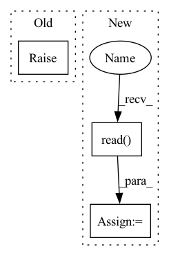

Pattern ID :29993
Before Change
raise NotImplementedError
def from_disk(self, path, exclude=tuple(), **kwargs):
raise NotImplementedError
class Table(dict):After Change
filepath = path / "lookups.bin"
if filepath.exists():
with filepath.open("rb") as file_:
data = file_ .read()
return self.from_bytes(data)
return self
In pattern: SUPERPATTERN
Frequency: 3
Non-data size: 3
Instances Fragment ID: 88948364
Project Name: explosion/spaCy
Commit Name: 3e8f136ba7e400dc046e4a4571ffd3def948daf0
Time: 2019-09-09
Author: ines@ines.io
File Name: spacy/lookups.py
M Class Name: Lookups
N Class Name: Lookups
M Method Name: from_disk(2)
N Method Name: from_disk(3)
M Parent Class: object
N Parent Class: object
M File Name: spacy/lookups.py
N File Name: spacy/lookups.py
M Start Line: 43
M End Line: 44
N Start Line: 127
N End Line: 133
Before Change
class SpeechDataset(Dataset):
def __init__(self):
super(SpeechDataset, self).__init__()
raise NotImplementedError
def __len__(self):
raise NotImplementedErrorAfter Change
def __init__(self, trn, root_dir="/root/storage/dataset/kspon", mode="train", conf="../config/ksponspeech.yaml"):
super(SpeechDataset, self).__init__()
self.root_dir = root_dir
with open(trn, "r") as f :
self.data = f.read() .strip().split("\n")
self.prep_data()
with open(conf, "r") as f: Fragment ID: 88948367
Project Name: qute012/kosr
Commit Name: 81741a4641b2fe541d7e4a2375eedb645d4254a2
Time: 2021-01-28
Author: ejrwls012@gmail.com
File Name: kosr/data/dataset.py
M Class Name: SpeechDataset
N Class Name: SpeechDataset
M Method Name: __init__(5)
N Method Name: __init__(1)
M Parent Class: Dataset
N Parent Class: Dataset
M File Name: kosr/data/dataset.py
N File Name: kosr/data/dataset.py
M Start Line: 4
M End Line: 6
N Start Line: 7
N End Line: 20
Before Change
if magic:
if "ipykernel" not in sys.modules:
raise EnvironmentError(
"The magic functions are only usable "
"in a Jupyter notebook."
)After Change
magic: Whether to render in a Jupyter notebook or not.
datasets = []
for output_name, artifact_view in step.outputs.items():
df = artifact_view.read()
datasets.append({"name": output_name, "table": df})
h = self.generate_html(datasets)
self.generate_facet(h, magic)
Fragment ID: 88948368
Project Name: maiot-io/zenml
Commit Name: e51baa83069396f3ff822267e5250f84af1ad467
Time: 2021-11-14
Author: htahir111@gmail.com
File Name: src/zenml/post_execution/visualizers/facet_statistics_visualizer.py
M Class Name: FacetStatisticsVisualizer
N Class Name: FacetStatisticsVisualizer
M Method Name: visualize(3)
N Method Name: visualize(3)
M Parent Class:
N Parent Class:
M File Name: src/zenml/post_execution/visualizers/facet_statistics_visualizer.py
N File Name: src/zenml/post_execution/visualizers/facet_statistics_visualizer.py
M Start Line: 39
M End Line: 65
N Start Line: 47
N End Line: 52